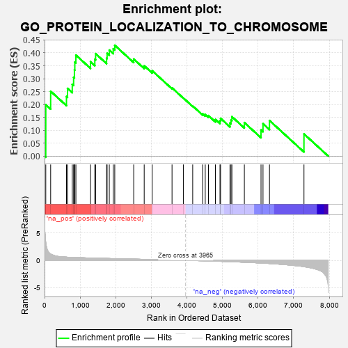

| | | Dataset | 7d |
| Phenotype | NoPhenotypeAvailable |
| Upregulated in class | na_pos |
| GeneSet | GO_PROTEIN_LOCALIZATION_TO_CHROMOSOME |
| Enrichment Score (ES) | 0.4293783 |
| Normalized Enrichment Score (NES) | 1.4198161 |
| Nominal p-value | 0.04494382 |
| FDR q-value | 0.32652646 |
| FWER p-Value | 1.0 |
Table: GSEA Results Summary

Fig 1: Enrichment plot: GO_PROTEIN_LOCALIZATION_TO_CHROMOSOME
Profile of the Running ES Score & Positions of GeneSet Members on the Rank Ordered List
| PROBE | GENE SYMBOL | GENE_TITLE | RANK IN GENE LIST | RANK METRIC SCORE | RUNNING ES | CORE ENRICHMENT | | 1 | SPO11 | | | 35 | 3.371 | 0.1993 | Yes |
| 2 | BUB3 | | | 172 | 1.143 | 0.2512 | Yes |
| 3 | NDC80 | | | 616 | 0.590 | 0.2311 | Yes |
| 4 | MCM8 | | | 646 | 0.578 | 0.2623 | Yes |
| 5 | RAD21 | | | 779 | 0.538 | 0.2782 | Yes |
| 6 | RPA1 | | | 817 | 0.527 | 0.3054 | Yes |
| 7 | SGF29 | | | 840 | 0.521 | 0.3341 | Yes |
| 8 | RPA2 | | | 851 | 0.519 | 0.3642 | Yes |
| 9 | HDAC8 | | | 881 | 0.510 | 0.3914 | Yes |
| 10 | DKC1 | | | 1292 | 0.431 | 0.3657 | Yes |
| 11 | CARM1 | | | 1413 | 0.408 | 0.3752 | Yes |
| 12 | CHMP7 | | | 1435 | 0.403 | 0.3969 | Yes |
| 13 | MRNIP | | | 1743 | 0.346 | 0.3792 | Yes |
| 14 | WAPL | | | 1758 | 0.344 | 0.3982 | Yes |
| 15 | MSH2 | | | 1819 | 0.334 | 0.4108 | Yes |
| 16 | TASOR | | | 1931 | 0.316 | 0.4159 | Yes |
| 17 | ZW10 | | | 1973 | 0.309 | 0.4294 | Yes |
| 18 | CDT1 | | | 2505 | 0.226 | 0.3761 | No |
| 19 | ATR | | | 2800 | 0.183 | 0.3501 | No |
| 20 | BRCA2 | | | 3024 | 0.146 | 0.3308 | No |
| 21 | LRWD1 | | | 3582 | 0.063 | 0.2644 | No |
| 22 | NIPBL | | | 3900 | 0.010 | 0.2251 | No |
| 23 | MCM9 | | | 4163 | -0.036 | 0.1942 | No |
| 24 | SETD2 | | | 4443 | -0.084 | 0.1641 | No |
| 25 | PINX1 | | | 4515 | -0.097 | 0.1610 | No |
| 26 | ESCO2 | | | 4605 | -0.119 | 0.1570 | No |
| 27 | TERT | | | 4801 | -0.157 | 0.1419 | No |
| 28 | ATRX | | | 4929 | -0.184 | 0.1370 | No |
| 29 | XRCC5 | | | 4946 | -0.187 | 0.1463 | No |
| 30 | ATM | | | 5210 | -0.249 | 0.1282 | No |
| 31 | TNKS2 | | | 5239 | -0.254 | 0.1401 | No |
| 32 | CDK1 | | | 5264 | -0.262 | 0.1529 | No |
| 33 | GNL3 | | | 5614 | -0.349 | 0.1299 | No |
| 34 | PLK1 | | | 6082 | -0.500 | 0.1013 | No |
| 35 | TNKS | | | 6138 | -0.516 | 0.1255 | No |
| 36 | BOD1 | | | 6320 | -0.583 | 0.1380 | No |
| 37 | PARP3 | | | 7289 | -1.158 | 0.0859 | No |
Table: GSEA details [plain text format]
Fig 2: GO_PROTEIN_LOCALIZATION_TO_CHROMOSOME: Random ES distribution
Gene set null distribution of ES for GO_PROTEIN_LOCALIZATION_TO_CHROMOSOME